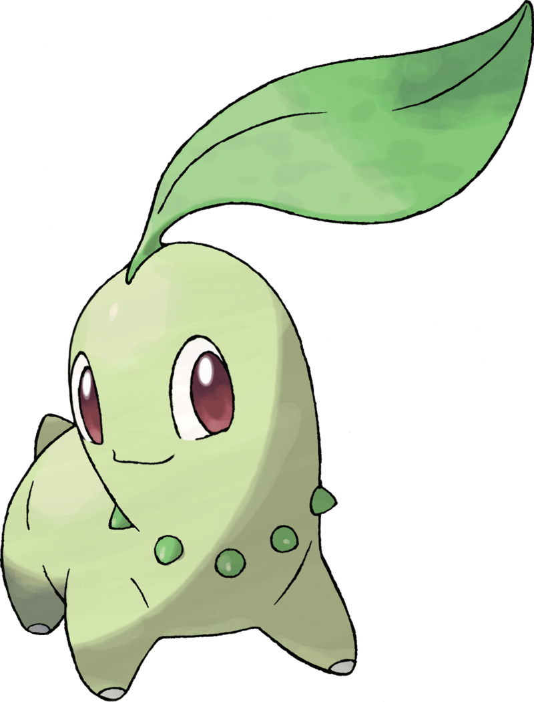
Germignon n0152.
Lorsqu’il se bat, Germignon secoue sa feuille pour tenir son ennemi à distance. Un doux parfum s’en dégage également, apaisant les Pokémon qui se battent et créant une atmosphère agréable et amicale.

Macronium n0153.
Le cou de Macronium est entouré de nombreuses feuilles. Dans chacune d’elles se trouve une pousse d’arbre. Le parfum de cette pousse donne la pêche aux personnes qui le sentent.

Méganium n0154.
Le parfum de la fleur de Méganium apaise et calme les esprits. Pendant les combats, ce Pokémon émet son parfum relaxant pour atténuer l’agressivité de l’ennemi.
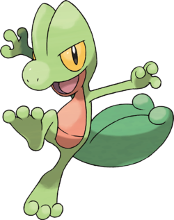
Arcko n0252.
Arcko est doté de petits crochets sous les pattes, ce qui lui permet de grimper aux murs. Ce Pokémon attaque en frappant ses ennemis avec son épaisse queue.
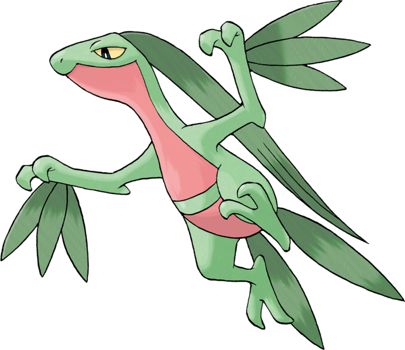
Massko n0253.
Les feuilles qui poussent sur le corps de Massko sont bien pratiques lorsqu’il veut se camoufler dans la forêt. Ce Pokémon est passé maître dans l’art de grimper aux arbres.
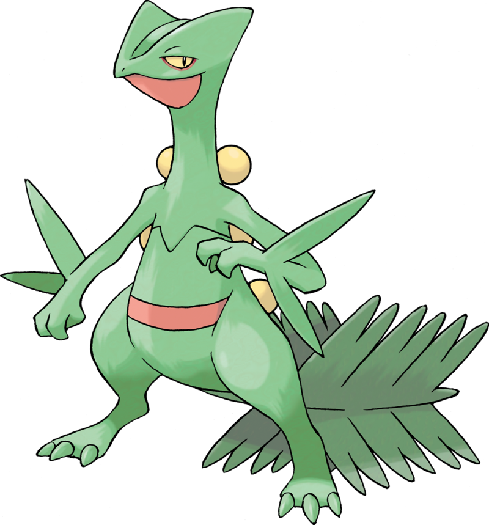
Jungko n0254.
Les feuilles qui poussent sur le corps de Jungko sont extrêmement tranchantes. Ce Pokémon est très agile. Il bondit de branche en branche avant de sauter sur son ennemi.

Tortipouss n0387.
Son corps assimile la lumière du soleil par photosynthèse. Sa carapace est faite de terre durcie.

Boskara n0388.
Il vit en forêt près de l’eau. En journée, il la quitte pour dorer sa carapace feuillue au soleil.

Torterra n0389.
Autrefois, les gens pensaient qu’un gigantesque Torterra vivait sous la surface de la Terre.
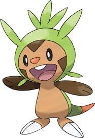
Marisson n0650.
Lorsqu’il rassemble ses forces, les piquants souples qui recouvrent sa tête deviennent si durs et acérés qu’ils pourraient transpercer un rocher.
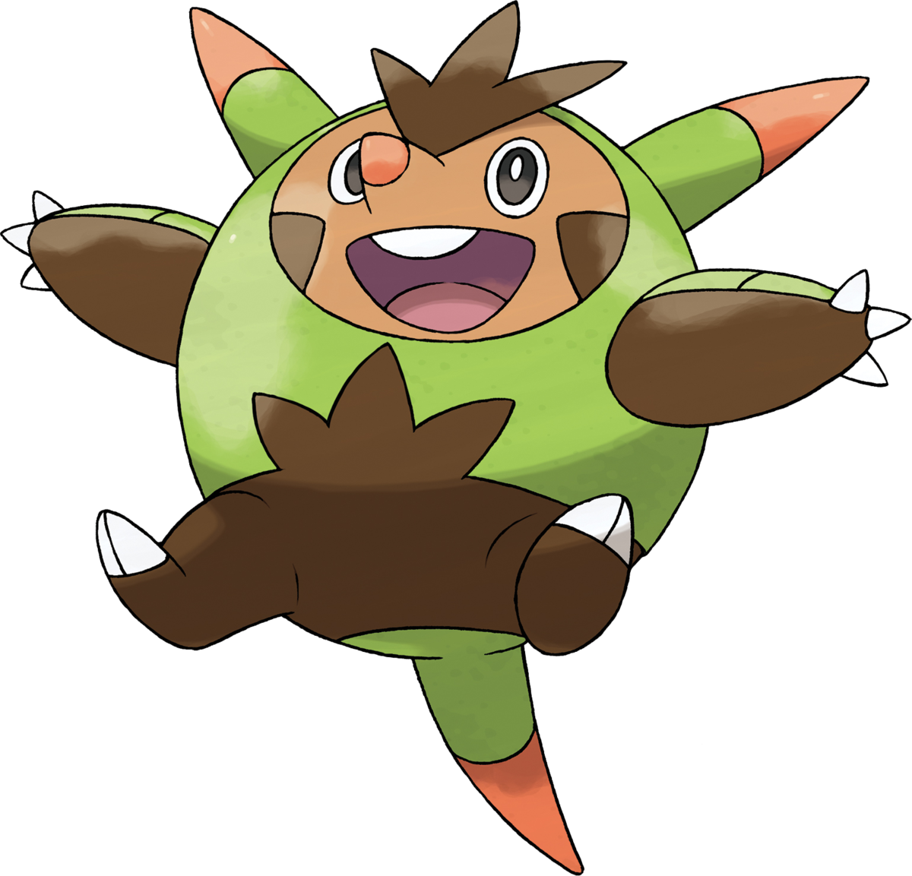
Boguérisse n0651.
La carapace qui recouvre son corps le protège des attaques adverses, et ses piquants lui permettent de contre-attaquer.
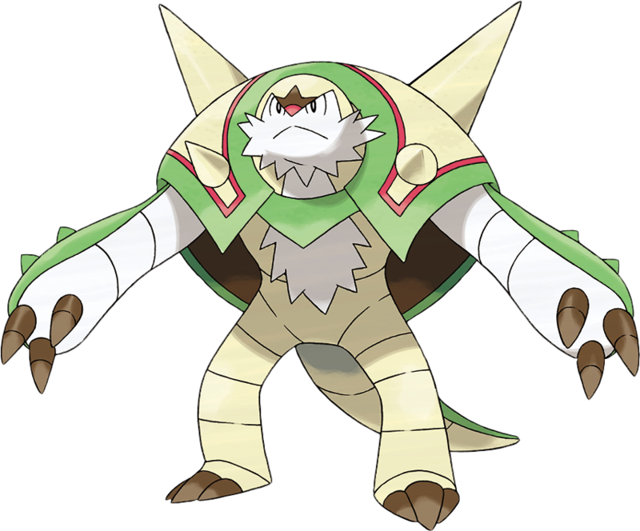
Blindépique n0652.
Il est si puissant qu’il pourrait renverser un char de 50 t d’un seul assaut. Il se sert de son corps comme d’un bouclier pour protéger ses alliés.
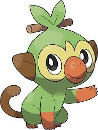
Ouistempo n0810.
Le rythme qu’il crée en tapant avec son bâton très spécial génère des ondes sonores qui ont le pouvoir de vivifier les plantes.

Badabouin n0811.
Les Badabouin qui parviennent à suivre le rythme le plus effréné avec leurs deux bâtons sont les plus respectés par leurs camarades.
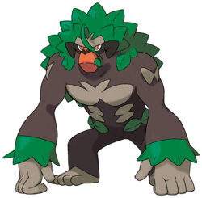
Gorythmic n0812.
Il contrôle le pouvoir de sa souche singulière en tapant en rythme dessus. Il se bat en manipulant des racines.
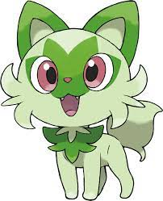
Poussacha n0906.
Ce Pokémon lave assidûment son visage pour éviter qu’il ne s’assèche. La composition de son pelage soyeux est proche de celle des plantes.

Matourgeon n0907.
Il manie avec habileté la liane dissimulée sous ses longs poils et frappe ses adversaires avec le bourgeon dur situé à son extrémité.
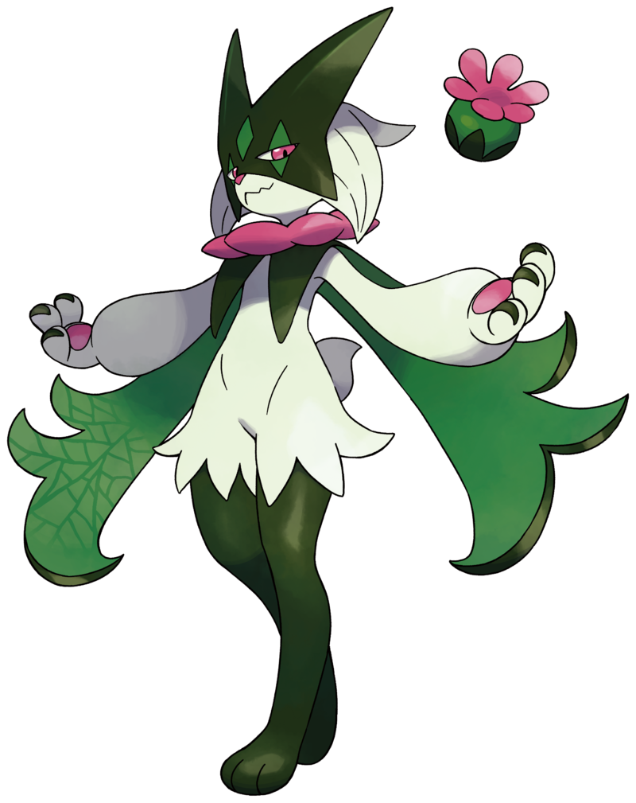
Miascarade n0908.
Il se sert de la réverbération de la lumière sur la fourrure de sa cape pour camoufler sa tige, ce qui donne l’illusion que sa fleur flotte dans les airs.